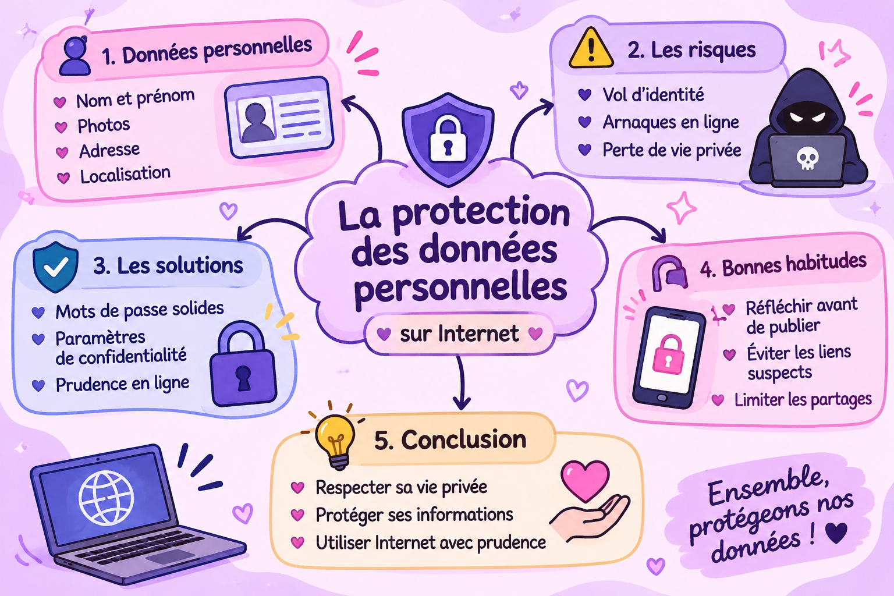

🎨 Création de contenu numérique
Transformer les idées en créations originales !
✨ Qu'est-ce que la création de contenu ?
La création de contenu numérique consiste à produire des informations et des supports destinés à être partagés sur Internet : vidéos, podcasts, présentations, cartes mentales, images et textes.
🎬 Ma vidéo : Protégeons nos données personnelles
Découvrez ma vidéo de sensibilisation aux risques du partage des données personnelles sur Internet.
🌸 Mon projet de création
Pour cette activité, j'ai choisi le thème : Les dangers du partage des données personnelles sur Internet.
🎬 1. Vidéo avec avatar
Une courte vidéo dans laquelle un avatar présente le thème et explique les risques liés au partage des données personnelles.
Ma vidéo sera ajoutée ici.
🎥 2. Vidéo montée et sous-titrée
Une vidéo informative avec des images, du texte et des sous-titres pour sensibiliser les internautes.
Ma vidéo sera ajoutée ici.
📝 3. Résumé du sujet
Le partage des données personnelles sur Internet peut entraîner des risques pour la vie privée. Les informations publiées peuvent être utilisées sans autorisation. Il est donc important de réfléchir avant de publier, de protéger ses comptes et de limiter les informations personnelles partagées.
🎙️ Mon podcast
Écoutez mon podcast sur la protection des données personnelles.
🧠 Ma carte mentale
Voici une carte mentale présentant les risques et les solutions pour protéger nos données personnelles.

📝 Mon résumé
Les dangers du partage des données personnelles sur Internet
Internet et les réseaux sociaux font partie de notre vie quotidienne. Nous partageons régulièrement des photos, des vidéos, notre localisation et plusieurs informations personnelles.
Cependant, le partage excessif de ces données présente des risques importants : vol d'identité, arnaques en ligne, usurpation de comptes et perte de vie privée.
Pour éviter ces dangers, il faut utiliser des mots de passe solides, limiter les informations publiées, vérifier les paramètres de confidentialité et éviter les liens suspects.
Conclusion : Nos données personnelles sont précieuses. Les protéger est une responsabilité que nous devons prendre au sérieux.
🎙️ 4. Podcast
Un court contenu audio qui présente les risques du partage des données personnelles et les bonnes pratiques à adopter.
Mon podcast sera ajouté ici.
🧠 5. Carte mentale
Une carte mentale qui organise les idées principales : données personnelles, risques, conséquences et solutions.
Ma carte mentale sera ajoutée ici.
📊 6. Présentation PowerPoint interactive
Une présentation avec des diapositives interactives et une narration audio pour expliquer le sujet.
Ma présentation sera ajoutée ici.
🤝 Utilisation de l'intelligence artificielle
J'ai utilisé des outils d'intelligence artificielle pour m'aider à organiser mes idées et préparer certains contenus. J'ai ensuite vérifié et adapté les informations pour réaliser mes propres productions.